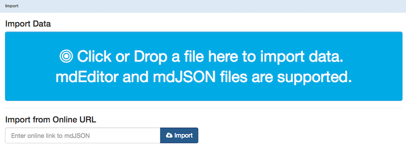
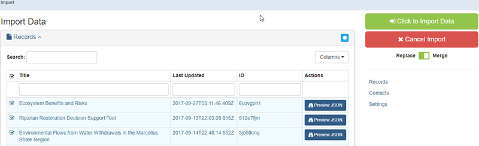
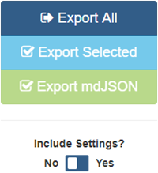

File Management
File management in mdEditor consists of consistent and proper handling and storage of mdEditor derived formats of metadata. These files are essential for long-term access to metadata beyond a single work session.
How mdEditor Stores Information
mdEditor stores information on your local computer in your browser’s localStorage cache (not the normal file cache). This means that if you use a different browser to access mdEditor, it will not show the metadata records from your original browser. It also means that clearing your browser’s cache generally will not delete your mdEditor records. However, depending on your browser’s settings, clearing your browser cache may still delete your mdEditor data (e.g., in Chrome, checking the “cookies and other site data” option will clear your mdEditor data).
In mdEditor settings, you can clear your storage cache. Doing so will remove all of the information currently loaded in mdEditor. Reasons you might want to clear your storage cache is due to too much information stored in the cache, or as a way to debug a problem with mdEditor. It is very important that you back up your records before clearing the mdEditor cache to avoid losing your data. Consult the Export or Settings section of this manual to learn more.
mdEditor File Format
JSON (JavaScript Object Notation) is an open-standard file format with file extension .json. The underlying format of the metadata from mdEditor is mdJSON, which was created specifically for mdEditor. There are two types of mdJSON files.
- mdJSON files are the format that is published from mdEditor and can be made available on ScienceBase and data.gov. Their default file name is md_metadata.json.
- mdEditor files are the files used by mdEditor and that are stored into the project’s archive record. They contain extra information, such as settings, that tell mdEditor how to operate. Their default file name is mdeditor-timestamp.json.
mdEditor files will be exported and imported to/from the project’s archive record
Import
The Import function loads an mdEditor or mdJSON file into the current mdEditor session. You can also import existing ScienceBase metadata or FGDC (Federal Geographic Data Committee) metadata into mdEditor to create mdJSON.
General Import Settings
Replace vs. Merge
The Replace/Merge toggle allows you to either replace or merge the imported records with the records currently loaded in mdEditor.
When importing existing mdEditor files from the project archive folder, choose “Replace.” That will ensure that only those records associated with the project you are working on are loaded into the mdEditor.
In most instances, when you import the Contacts or Data Dictionary records, you should select “Merge.” That will ensure that the master file of contacts or data dictionary records, stored in the program archive folder, will be updated with any new entries added to the mdEditor.
Import Screen
You can click or drag and drop a file onto the Import Data button to import a local file.

- Review the selected information. If there is more than one copy of the same metadata record or contact, use the “preview JSON” button to choose the record or contact with the most complete information.
- Select the records you want to import.
- Switch the Replace/Merge toggle to “Replace” for project/product records and “Merge” for Contact and Data Dictionary records.
- Click on the right hand button “Click to Import Data.”

Export
The export function allows the current set of metadata records to be saved as an mdEditor or mdJSON file. The saved files can be shared with collaborators, imported into another record set, or imported into another browser. Exported mdEditor files should be saved as a backup or archival copy in the project’s archive folder.
Using Export to Backup Records
Exporting records is the only way to save mdEditor files outside of your browser cache. You should backup by exporting an mdEditor JSON file each time you finish a work session in mdEditor or switch browsers.
mdEditor files vs. mdJSON files
mdJSON files can be uploaded and translated to other formats via the mdTranslator application while mdEditor files are exclusive to the mdEditor application and retain all mdEditor information, including Settings.
Best Practices
-Export project and product records to the project’s archive folder as an mdEditor JSON file. Include Settings.
-Export the contact and data dictionary records to the program’s archive folder as mdEditor JSON files. Include Settings. These records are backed up in a different location because they are reused across many projects.
-It is particularly important that you export your records for backup before using mdEditor’s Clear Storage Cache functionality (clearing the storage cache will delete any records or data you have entered into the mdEditor). Exporting ensures that your data is secure even after clearing the storage cache. Not exporting your data before clearing your cache will result in a permanent loss of records. Consult the Settings section of this manual to learn more.
Export Options
While exporting data, there are four options available (on the right side of the export data window).

Export All: will export everything currently loaded in mdEditor into a single file. Exports an mdEditor JSON file.
Export Selected: will only export the items you have selected (so individual records, contacts, etc.). If nothing is selected it will be disabled (i.e., grayed out). This exports an mdEditor JSON file.
Export mdJSON: only works for metadata records (i.e., doesn’t work for contacts). Exports just the mdJSON file, which is a standalone JSON file you can load into mdTranslator and have translated into other metadata formats. mdJSON files imported into mdEditor are treated as new records and will not merge/update an existing record.
Clicking the Include Settings switch will also export mdEditor settings (only for mdEditor files). Consult the Settings section of this manual to learn about settings.
Copy Records
The Copy button is located in the mdEditor action menu on the right-hand side of the screen. The Copy Button allows you to make a duplicate of an existing metadata record.
Making a copy of a record can be used to:
- Start a new product, project, or contact record.
- Populate multiple products faster (e.g., multiple workshop reports, a poster based on a publication).
- Create a “template record” for a project that can be used as a starting place for each full metadata record. A template record can contain information commonly used across your projects or products (such as contacts).
Use the Copy button carefully:
Making a copy will generate a new Record ID for the copied record and be named “Copy of …”. All the other info will remain the same including associations. The “Metadata Identifier” is NOT copied but any identifiers in the Main Citation WILL be copied.
It is extremely important to review all copied identifiers and delete any that do not apply to the new record. Leaving in identifiers that do not belong could result in your new item being published to the wrong location.
Before saving, carefully review all information in copied record to ensure all copied info is still relevant to the copied record, particularly any identifiers.